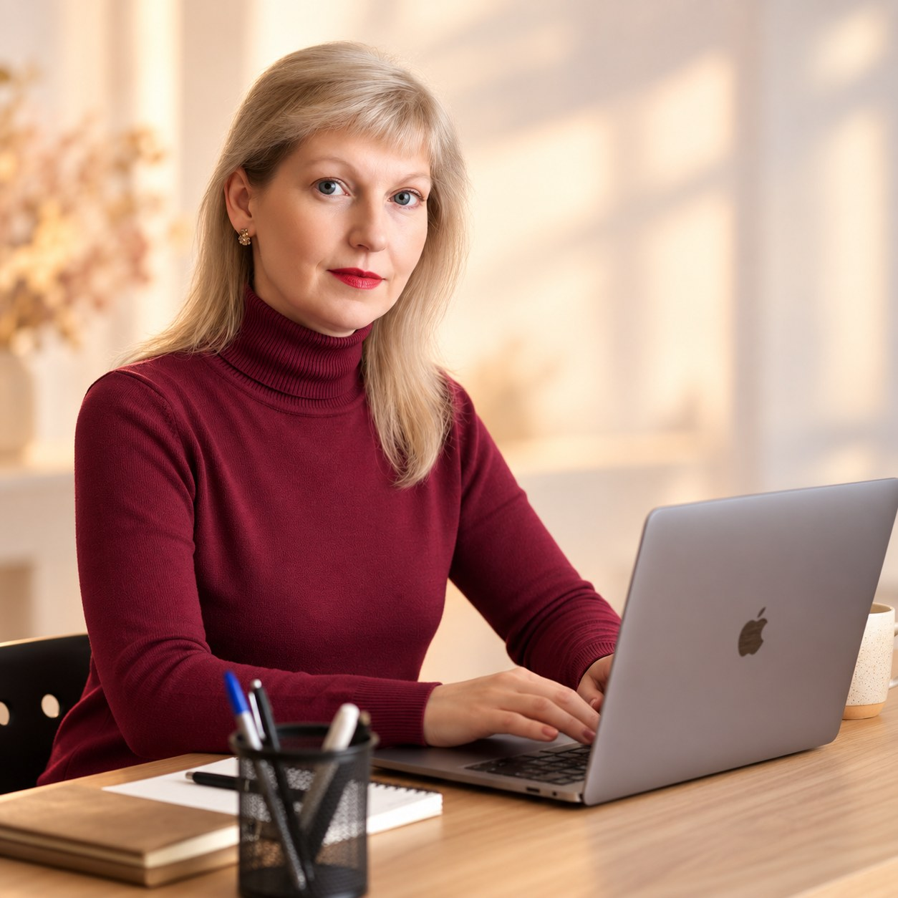

Аудит сообщества ВКонтакте
011 000 ₽
Разберу оформление, контент и структуру сообщества, найду слабые места и точки роста. Вы получите понятные рекомендации: что и зачем стоит изменить.
SMM · контент · визуал · AI
Помогаю экспертам и малому бизнесу создавать живые сообщества ВКонтакте — от оформления и контент-стратегии до текстов, визуала и видео
Вы занимаетесь своим делом — я беру контент на себя
Услуги и стоимость
Можно начать с одной задачи или собрать комплексное решение для вашего сообщества
1 000 ₽
Разберу оформление, контент и структуру сообщества, найду слабые места и точки роста. Вы получите понятные рекомендации: что и зачем стоит изменить.
от 7 000 ₽
Обложки, визуальная система и оформление — чтобы посетитель с первого взгляда понимал, кто вы, чем занимаетесь и почему стоит остаться.
от 30 000 ₽ в месяц
Контент-план, тексты и визуал в едином стиле. Помогаю сделать ведение сообщества регулярным и снять с владельца постоянную необходимость придумывать, что публиковать.
Зависит от задачи
Создание изображений, текстов, коротких видео и других визуальных материалов с использованием современных AI-инструментов.
Все направления соединяют аудит, контент, копирайтинг, визуал, видео и нейросети
Узнаёте свою ситуацию?
На ведение ВКонтакте постоянно не хватает времени
Каждый раз приходится думать: «О чём сегодня писать?»
Сообщество выглядит разрозненно и ему не хватает единого стиля
Хочется передать эту работу специалисту, но сохранить собственный голос
Я не меняю ваш голос. Я помогаю ему звучать убедительнее
Как строится работа
Разбираюсь в продукте, аудитории, задачах и особенностях вашего бизнеса.
Изучаю текущее состояние сообщества, контент и оформление, нахожу точки роста.
Определяем формат работы, стиль, рубрики и задачи, которые необходимо решить.
Создаю согласованные тексты, визуал и другие материалы.
Понятный и прозрачный процесс без сложной SMM-терминологии

SMM-специалист
Я Светлана Глазунова. Соединяю в работе тексты, визуал, маркетинг и современные технологии — поэтому контент можно создать в одном месте: от идеи до изображения или короткого видео.
к охватам в одном кейсе после переработки визуальной концепции и структуры контента
Это результат конкретного проекта, а не гарантия для каждого клиента
Есть сообщество ВКонтакте, которое хочется привести в порядок?
Напишите мне. Я посмотрю вашу задачу, и мы определим, какой формат работы вам действительно нужен.
Сообщество ВКонтакте · vk.ru/smmvklana